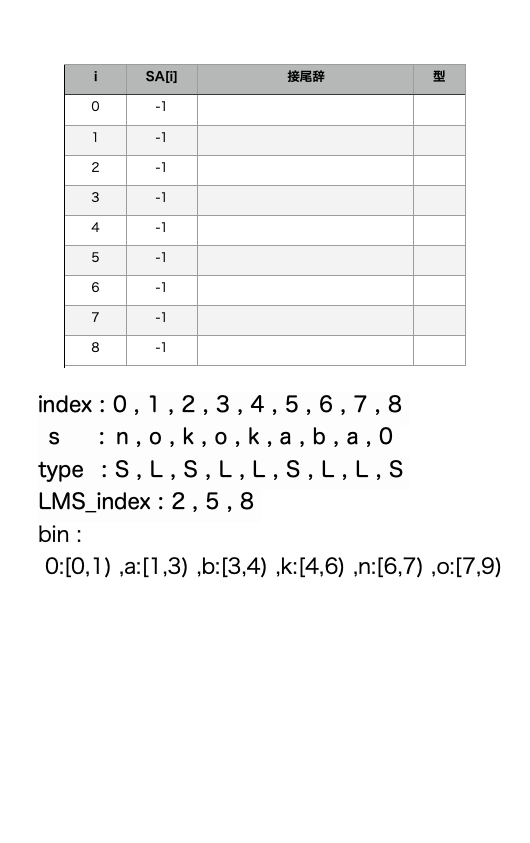
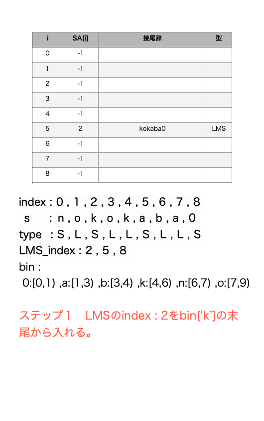
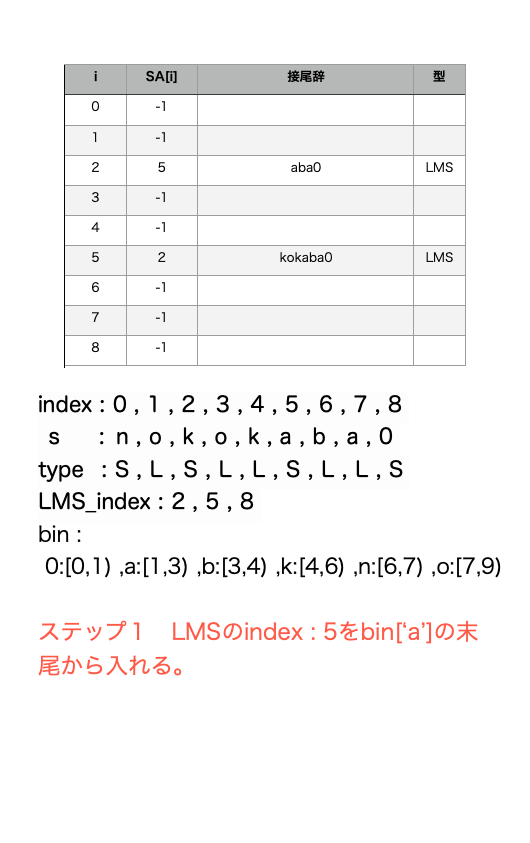
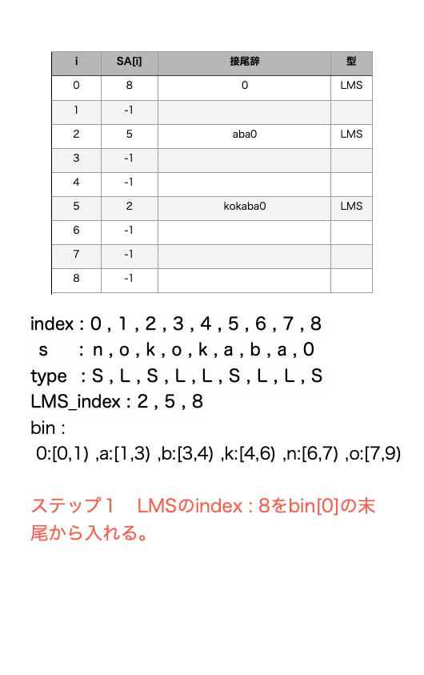
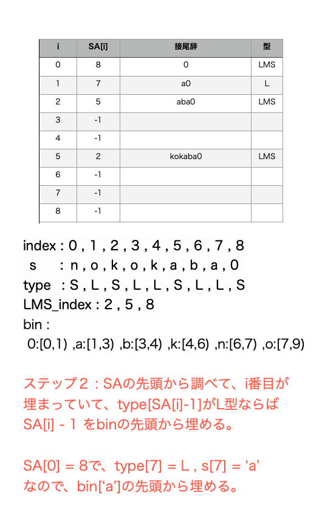
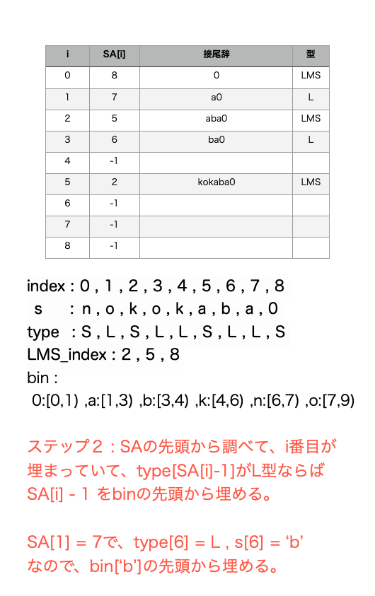
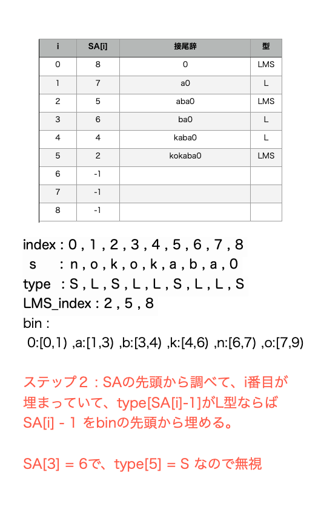
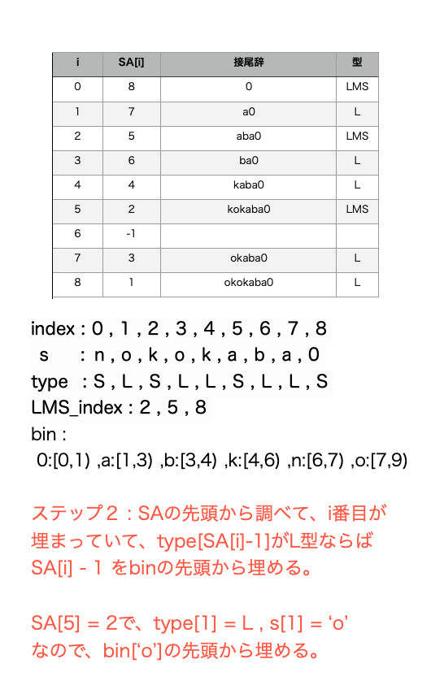
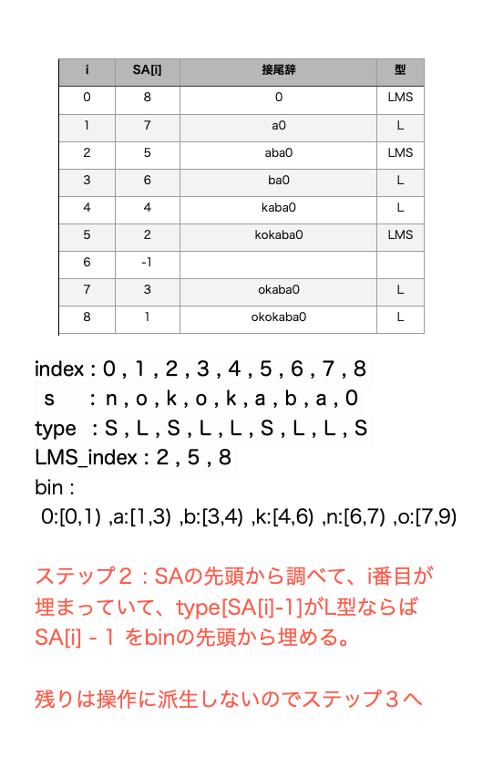
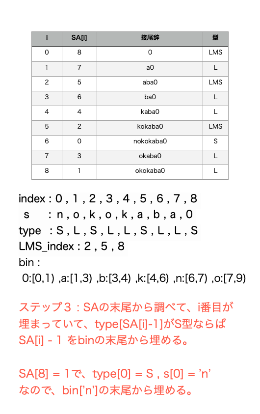

前のページ
Suffix Arrayのレシピを勉強しました。
かなり大変なレシピでしたが、大好きなあの子にご馳走するために頑張って勉強しました。
とりあえず軽く実装の流れを書きます。
Suffix Arrayとは
文字列 s の i 番目の接尾辞を、s_i から sの末尾までの連続した部分文字列とするとき、
文字列 s の Suffix Arrayとは、sの接尾辞を全て辞書順で昇順に並べたとき、ソートされた接尾辞が s の何番目の接尾辞かを int で並べたものです。
例でいうと、s = kaba の時、s のSuffix Arrayは
接尾辞(空列を含む)を昇順に並べたもの : { "" , "a" , "aba" , "ba" , "kaba" }
並べた接尾辞が s の接尾辞のうち何番目のものか : { 4 , 3 , 1 , 2 , 0 }
といった感じです。
さて、これをどうやって求めるのでしょうか。
愚直に接尾辞を全て求めてそれらをソートすると、s の長さが N とすると、接尾辞同士の辞書順比較に O(N) , ソートに O(NlogN) で結局 O(N^2logN) かかってしまいます。
解 : O(N)で求めるアルゴリズムがあります。
SA-IS といいまして、天才です。
SA-IS に必要なものをいくつかまとめます(結構あります)。
induced_sort := SA-ISアルゴリズムの中で使う、少し特殊なソートです。
S型 , L型 := s の接尾辞に型をつける。
i 番目の接尾辞が i+1 番目の接尾辞よりも辞書順で小さいなら、i 番目の接尾辞は S型
i 番目の接尾辞が i+1 番目の接尾辞よりも辞書順で大きいなら、i 番目の接尾辞は L型
s の接尾辞は全て長さが異なるので、= であるようなものはない
LMS ~ Left Most S := i 番目の接尾辞が L型で、i+1 番目の接尾辞がS型の時、i+1 番目はLMSという
LMS-substring := i が LMS であったとき、i の次にLMSが現れるまでの連続部分文字列
コードで使う変数、配列。前準備。
s の末尾に番兵: 0 を追加して、番兵が s のどの要素よりも小さくなるように、s の末尾以外の要素を +1 する。番兵 0 の type は S型とする。
int s_size := s の長さ
vector<int> SA(s_size) := s をinduced_sortした結果を入れておく。メモリ節約のため、LMSに番号を割り振るときにも再利用する。
vector<char> type(s_size) := s の各 index の型が何か。
vector<int> LMS_index := s のうち、LMSであるような index を前から順に入れておく。一度目のinduced_sortの元として使う。
vector<int> num_for_LMS( LMS_index.size() ) := 各 LMS に番号を割り振る。num_for_LMS[i] は、 s の 前から見て i 番目の LMS に割り振る番号。
vector<int> NewLMS_index( LMS_index.size() ) := 各 LMS に割り振られた番号をもとに LMS を並べ替えたもの。二度目のinduced_sortの元として使う。
次はinduced_sortです
induced_sortとは
簡単に、 s = nokokaba である場合に、上記の変数がどんなものになるのかをまとめましょう。
index : 0 , 1 , 2 , 3 , 4 , 5 , 6 , 7 , 8
s : n , o , k , o , k , a , b , a , 0
type : S , L , S , L , L , S , L , L , S
LMS_index : 2 , 5 , 8
ここで、新たにvector<int> bin(max_val) という配列を用意します。
bin[c] が表すのは、文字 c から始まる接尾辞がSuffix Array(SA)のどの位置に現れるのかです。
具体的にいうと、c から始まる接尾辞は、求めるSuffix Arrayにおいて、半開区間 : [ bin[c] , bin[c+1] ) に現れる。
という定義のもと、binを作っていきます。
binの作り方は簡単で、s の中身を見て、文字 c が現れたら bin[c]++ をして、
sを全て見終わったらxが小さい順からbin[c+1] += bin[c]と、累積和のようにスライドさせていきます。
また、文字 c から始まる接尾辞が現れる区間を、c の bin と呼ぶことにします。
それではinduced_sortのステップを3つに分けて紹介します。
SAに順に接尾辞のindexを入れていきます。SAは初めは-1で初期化されています。
ステップ１
各LMSのindexを、LMSの先頭の文字の bin の末尾から入れていきます。
ステップ２
SA を先頭から調べていき、SA が埋まっている(-1でない)なら、その index を x とする。
元の列 s において、s[x-1]が L型なら、s[x-1]のbinの先頭から x-1 を入れていきます。
ステップ3
SA を末尾から調べていき、SA が埋まっている(-1でない)なら、その index を x とする。
s[x-1] が S型なら、s[x-1] の bin の末尾から x-1 を入れていきます。
こうして並べた接尾辞は、少なくとも先頭の文字についてはソートされています。
また、ある LMS から、ひとつ前の LMS までに現れる接尾辞に関してはソートされています。これは、各ステップとL型S型の定義を睨んだらわかると思います。
ステップ２では、LMS、または L型の接尾辞から その一つ手前の L型接尾辞 を並べています。
LMSの先頭の文字 < 1つ手前の L型の先頭の文字なので、必ずこれらは異なる bin に現れます。x < y について、 bin[x] <= bin[y] なので、これらはソートされています。
また、L型の接尾辞 t から 一つ手前の L型 t' を並べるとき、L型の定義より t < t' であり、ステップ２ではbinの先頭から埋めるという状況なので、t と t'
の先頭の文字が同じ場合でも必ず t' は t よりも後ろの位置にきます。
ステップ３では、L型の接尾辞 t からその一つ手前の S型の接尾辞 t' を並べます。 S型の定義より、t' < t なので、
binの末尾から埋めていけば t' は t よりも前の位置にきます。
このように、ある１つのLMS接尾辞から派生して並べられた接尾辞達は全てソートされています。
しかし、ステップ１で埋められた LMS接尾辞達についてはソートされていません。
わかりやすいように、
s = "nokokaba"の場合のソートの動きを図で見せましょう。










続きはまた今度かきます。
こちらの問題でverifyしました。以下はコード例です。
- #include<iostream>
- #include<vector>
- #include<string>
- using namespace std;
- /*
- s：元の文字列
- type:s[i]のタイプ(LS型) = type[i]
- LMS_index : sのlmsのindexを並べたもの
- charnum_max : 使われている文字の種類数
- */
- template<class String_or_VectorInt>
- vector<int> induced_sort(String_or_VectorInt &s , vector<char> &type , vector<int> &LMS_index , int charnum_max ){
- vector<int> res(s.size() , -1);
-
- vector<int> bin(charnum_max+1,0);//文字コードをindexとして、文字cはsuffixArrayの[ bin[c] , bin[c+1] )の場所に現れる
- vector<int> bin_cop;//binはcount変数としてよく使うので、使う際はコピーを使う
- for(int c : s){//必ずint !!
- //各文字が現れる回数をカウント
- bin[c]++;
- }
-
- /*
- suffixの先頭の文字のみをソートした時、文字:cが現れる位置は、[ bin[c] , bin[c+1] ) である(半開区間なのに注意)
- 例えば、bin[$] = 0 , bin[a] = 1 , bin[b] = 1 , bin[c] = 3 , bin[d] = 4の時、
- 先頭の文字だけソートしたら { $ b b c ... } となる
- */
- int now_ind = 0;
- for(int i = 0 ; i < bin.size() ;i++){
- int next_ind = now_ind + bin[i];
- bin[i] = now_ind;
- now_ind = next_ind;
- }
- //induce sortのステップ１(LMSを、s[LMS]のbinの末尾(上限)の方から埋めていく(SufArrにはindexを入れていく))
- bin_cop = bin;//カウント用
- for(int i = (int)LMS_index.size()-1 ; i >= 0 ; i--){
- int lms = LMS_index[i];
- int c = s[lms];
- res[bin_cop[c+1]-1] = lms;
- bin_cop[c+1]--;
- }
-
- //ステップ２(SufArrを前から見て、SufArrに接尾辞のindex: i が入っていて、s[i-1]がL型の時、SufArrのbin[s[i-1]]の先頭の位置からi-1を入れていく
- bin_cop = bin;//カウント用
- for(int i = 0 ; i < res.size() ; i++){
- if(res[i] == -1)continue;//何も入っていない
- if(res[i] == 0)continue;//&なので、0-1はout of index
- if(type[res[i]-1] == 'S')continue;
- int c = s[res[i]-1];
- res[bin_cop[c]]=res[i]-1;
- bin_cop[c]++;
-
- }
- //ステップ３(SufArrを後ろから見て、SufArrに接尾辞のindex: i が入っていて、s[i-1]がS型の時、SufArrのbin[s[i-1]]の末尾(上限)の位置からi-1を入れていく
- bin_cop = bin;//カウント用
- for(int i = (int)res.size()-1 ; i >= 0 ; i--){
- if(res[i] == -1)continue;//何も入っていない
- if(res[i] == 0)continue;//&なので、0-1はout of index
- if(type[res[i]-1] == 'L')continue;
-
- int c = s[res[i]-1];
- res[bin_cop[c+1]-1]=res[i]-1;
- bin_cop[c+1]--;
-
- }
- return res;
- }
- /*
- 接尾辞配列(string or vector<int>)
- suffix arrayを返す。
- 特に、得られたsuffix arrayを使って、sのsuffix(接尾辞)に関して
- lower_bound_SA と upper_bound_SAができる。
- lower_bound_SA(s , suffixarray , t) := sの接尾辞たちの内、t以下のものの個数を求める。
- upper_bound_SA(s , suffixarray , t) := sの接尾辞たちの内、t未満のものの個数を求める。
- charnum_max = sに現れる文字の個数(文字コードの最大値)
- */
- template<class String_or_VectorInt>
- vector<int> SuffixArray(String_or_VectorInt s , int charnum_max = 1100000){
- /*
- 計算中はsの末尾に0を加える
- 0を加えるので、sの中身を全て+1する
- 末尾の0はsのどの文字よりも小さい
- */
- charnum_max++;
- for(int i = 0 ; i < s.size() ; i++){
- //0を最小として追加するので、インクリメント
- s[i]++;
- }
- s.push_back(0);
- //sのindexの型(L型かS型か)
- vector<char> type(s.size(),'.');
-
- //LMSかどうか
- vector<bool> isLMS(s.size(),false);
- //sの前から、LMSであるようなindexを順に入れる
- vector<int>LMS_index;
- //一度目のinduced_sortの結果を入れるやつ。メモリの節約のために,LMSに番号を割り振るときに再利用する
- vector<int> SA(s.size(),-1);
- //for文の外で変数が必要な時、これ使って
- int now_ind = 0;
- //LMSに番割り振った番号の最大値
- int max_num = -1;
- //一度目のソートの結果で、前からLMSである部分だけ順番に取り出す。そして、適切に並べ替える。
- vector<int>NewLMS_index;
- //NewLMS_indexのi番目に割り振る番号
- vector<int> num_for_LMS;
- /*
- sのindex:iが
- S型 := sのi文字目以降の接尾辞が、i+1文字目以降の接尾辞よりも辞書順で小さい。
- L型 := sのi文字目以降の接尾辞が、i+1文字目以降の接尾辞よりも辞書順で大きい。
- */
- type.back()='S';
- for(int i = (int)s.size()-2 ; i>= 0 ; i--){
- //i以降の接尾辞と、i+1以降の接尾辞の辞書順を比べる。(後ろから見れば、iとi+1文字目のみ見ればわかる)
- if(s[i] < s[i+1]){
- //s[i] < s[i+1]ならSタイプ(先頭の文字からの比較で辞書順は決まるから)
- type[i] = 'S';
- }else if(s[i]>s[i+1]){
- //s[i] > s[i+1]ならLタイプ(先頭の文字からの比較で辞書順は決まるから)
- type[i] = 'L';
- }else{
- //s[i]とs[i+1]が等しい時、i以降の接尾辞とi+1以降の接尾辞の先頭1文字を取ればいいので、i+1とi+2の場合と同じタイプ。
- type[i] = type[i+1];
- }
- }
-
- for(int i = 0 ; i < s.size()-1 ; i++){
- if(type[i] == 'L' && type[i+1] == 'S'){
- //LMSであるようなindexたちを入れる
- LMS_index.push_back(i+1);
- }
- }
- for(int ind : LMS_index)isLMS[ind]=true;
- vector<int>(LMS_index.size()).swap(NewLMS_index);//並べ替えたLMSも、個数は同じ
- vector<int>(LMS_index.size()).swap(num_for_LMS);//LMSに番号を割り振るので、LMS_indexのサイズと同じ
- /*
- LMS(Left-Most-S)とは、s[i-1]がL型で,s[i]がS型になるような index:i .
- LMS-substringとは、LMSであるようなindexに挟まれた文字列のこと。
- また、文字cのビンとは、求めるSuffixArrayにおいて、文字cで始まるsuffixが現れる場所の範囲のことである。
- 文字:cが現れる位置は、[ bin[c] , bin[c+1] ) である(半開区間なのに注意)
- 例えば、bin[$] = 0 , bin[a] = 1 , bin[b] = 1 , bin[c] = 3 , bin[d] = 4の時、
- 先頭の文字だけソートしたら { $ b b c ... } となる
- */
- //一度目のinducedsort
- SA = induced_sort(s,type,LMS_index,charnum_max);
- now_ind = 0;
- for(int x : SA){
- if(isLMS[x]){
- NewLMS_index[now_ind] = x;
- now_ind++;
- }
- }
-
-
- now_ind = 0;
- //メモリがもったいないので、SAを再利用。LMSのindexに番号を割り振ります。
- SA[NewLMS_index[now_ind]]=0;
-
- now_ind++;
-
-
- for(int i = 1 ; i < NewLMS_index.size() ; i++){
- //Iは、i-1番目のLMSのindex , Jはi番目のLMSのindex
- int J = NewLMS_index[i-1];
- int I = NewLMS_index[i];
- bool is_same_I_and_J = true;
- for(int x = 0 ; x < s.size() ; x++){
- if(J+x>=s.size())break;
- if(s[I+x]!=s[J+x] || isLMS[I+x] != isLMS[J+x]){
- is_same_I_and_J = false;
- break;
- }
- else if(x > 0 && (isLMS[I+x] || isLMS[J+x]))break;
- }
- if(is_same_I_and_J){
- num_for_LMS[now_ind] = num_for_LMS[now_ind-1];
- }else{
- num_for_LMS[now_ind] = num_for_LMS[now_ind-1] + 1;
- }
- SA[NewLMS_index[now_ind]] = num_for_LMS[now_ind];
-
- now_ind++;
- }
-
-
-
- //num_for_LMSを再利用。元の列:sの前から、LMSを発見したら順にそのLMSに割り振った番号をnum_for_indの後ろに追加
- now_ind = 0;
- for(int i = 0 ; i < s.size() ; i++){
- if(isLMS[i]){
- num_for_LMS[now_ind] = SA[i];
- now_ind++;
- max_num = max(SA[i] , max_num);
- }
-
- }
- //先頭を空けておきたいので、+1
- SA.resize(LMS_index.size()+1);
-
- if(max_num +1 == num_for_LMS.size()){
- for(int i = 0 ; i < num_for_LMS.size() ; i++){
- SA[num_for_LMS[i]+1] = i;//先頭は空けておくので+1
-
- }
- }else{
- SA = SuffixArray(num_for_LMS , max_num+5);
-
- }
-
-
- SA.erase(SA.begin());//先頭は邪魔
- for(int i = 0 ; i < SA.size(); i++){
- NewLMS_index[i] = LMS_index[SA[i]];
-
- }
- return induced_sort(s,type,NewLMS_index,charnum_max);
- }
- /*
- 比較でバグらせたら目も当てられないので、うしさんのブログからパクってきました。
- */
- template<class String_or_VectorInt>
- bool cp_with_suffix(String_or_VectorInt &s , int si , String_or_VectorInt t){
- int ti = 0;
- while(si < s.size() && ti < t.size()) {
- if(s[si] < t[ti]) return true;
- if(s[si] > t[ti]) return false;
- si++;
- ti++;
- }
- return si >= s.size() && ti < t.size();
- }
- /*
- 文字列(vector<int>) s のsuffixうち、suffix_arrayをもとに、辞書順で t 未満のものの個数を求める
- 元の列 s , sのsuffix_array , 検索する列 t
- */
- template<class String_or_VectorInt>
- int lower_bound_SA(String_or_VectorInt &s , vector<int> &suffix_array , String_or_VectorInt t){
- int lef = -1;
- int rig = suffix_array.size();
- while(rig-lef>1){
- int mid = lef + (rig-lef)/2;
- if(cp_with_suffix(s , suffix_array[mid],t)){
- lef = mid;
- }else{
- rig = mid;
- }
- }
- return rig;
- }
- /*
- 文字列(vector<int>) s のsuffixうち、suffix_arrayをもとに、辞書順で t 以下のものの個数を求める
- 元の列 s , sのsuffix_array , 検索する列 t
- うしさんのブログ参照
- */
- template<class String_or_VectorInt>
- int upper_bound_SA(String_or_VectorInt &s , vector<int> &suffix_array , String_or_VectorInt t){
- int lef = lower_bound_SA(s,suffix_array,t) - 1;
- int rig = suffix_array.size();
- t.back()++;
- while(rig-lef>1){
- int mid = lef + (rig-lef)/2;
- if(cp_with_suffix(s , suffix_array[mid],t)){
- lef = mid;
- }else{
- rig = mid;
- }
- }
- t.back()--;
- return rig;
- }
- int main(){
- string s;
- cin >> s;
- vector<int> SA = SuffixArray(s);
- int q ;
- cin >> q;
- while(q-->0){
- string t;cin >> t;
- if(upper_bound_SA(s,SA,t) - lower_bound_SA(s,SA,t)){
- cout << 1 << endl;
- }else{
- cout << 0 << endl;
- }
- }
- return 0;
- }